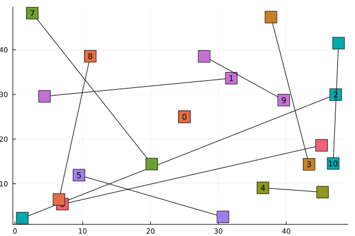

Instance generator
This package implements an instance generator, which can be used with the create_random_instance method.
For example, we can create a random instance with 10 tasks and 10 scenarios and plot it:
using StochasticVehicleScheduling
instance = create_random_instance(; nb_tasks=10, nb_scenarios=10)
using Plots
fig = plot()
for i in 1:(get_nb_tasks(instance) + 1)
task = instance.city.tasks[i]
(; start_point, end_point) = task
points = [(start_point.x, start_point.y), (end_point.x, end_point.y)]
plot!(fig, points; color=:black, label="")
scatter!(
fig,
points;
marker=:rect,
markersize=10,
label="",
series_annotations=[("$(i-1)", 9), ""],
)
endqt.qpa.xcb: could not connect to display
qt.qpa.plugin: Could not load the Qt platform plugin "xcb" in "" even though it was found.
This application failed to start because no Qt platform plugin could be initialized. Reinstalling the application may fix this problem.
Available platform plugins are: linuxfb, minimal, offscreen, vnc, xcb.
Aborted (core dumped)
connect: Connection refused
GKS: can't connect to GKS socket application
GKS: Open failed in routine OPEN_WS
GKS: GKS not in proper state. GKS must be either in the state WSOP or WSAC in routine ACTIVATE_WS This instance object can be used as input of all algorithms implemented in this package. More details on its attributes and how they are computed are provided bellow but not needed in order to experiment with this package.
City
When creating an instance, we first create a StochasticVehicleScheduling.City object. By default, a City is a squared map of 50 minutes width, divided in 25 squared (10 minutes width) districts (cf. the example plot above). The depot is located at the center of the map. Each task $v$ has an (uniformly drawn) start point, start time $t_v^b$, end point, and end time $t_v^e$.
For each scenario $s\in S$, we roll multiple random variables.
For each district $d$ and hour $h$ of the day, $\beta_{d, h}$ are independent log-normal variables with randomly (uniform) drawn parameters $(\mu, \sigma)\in [1, 3]\times [0.4, 0.6]$.
For each district $d$ and hour $h$ of the day, $\zeta_{d,h}^{dis}$ models the congestion in the district at this time.
\[\begin{cases} \forall d,\, \zeta^{dis}_{d, 0} = \beta_{d,0}\\ \forall d,h,\, \zeta^{dis}_{d, h+1} = \frac{1}{2}\zeta^{dis}_{d, h} + \beta_{d,h} \end{cases}\]
For each hour $h$ of the day, $\zeta^{inter}_h$ models the congestion on roads between districts, and is computed similarly:
\[\begin{cases} \zeta^{inter}_0 = I\\ \zeta^{inter}_{h+1} = (\zeta^{inter}_{h} + 0.1)I \end{cases}\]
with $I\sim \log\mathcal{N}(0.02, 0.05)$.
Let $v$ be a task corresponding to a trip between district $d_1$ and $d_2$. We compute the perturbed start and end times:
\[\begin{cases} \xi_v^b = t_v^b + \beta_v\\ \xi_v^e = \xi_v^b + t_v^e - t_v^b + \zeta^{dis}_{d_1,h(\xi_1)} + \zeta^{inter}_{h(\xi_2)} + \zeta^{dis}_{d_2, h(\xi_3)} \end{cases}\]
with $\xi_1 = \xi_v^b$, $\xi_2 = \xi_1 + \zeta^{dis}_{d_1,h(\xi_1)}$, and $\xi_3 = \xi_2 + t_v^e - t_v^b + \xi^{inter}_{h(\xi_2)}$.
Finally, for any $a=(u,v)$, we compute the perturbed travel time:
$\xi_a^{tr} = \xi_v^b + t_a^{tr} + \zeta^{dis}_{d_1,h(\xi_1)} + \zeta^{inter}_{h(\xi_2)} + \zeta^{dis}_{d_2, h(\xi_3)}$ with $\xi_1 = \xi_u^e$, $\xi_2 = \xi_1 + \zeta^{dis}_{d_1,h(\xi_1)}$, and$\xi_3 = \xi_2 + t_a^{tr} + \xi^{inter}_{h(\xi_2)}$.
The function create_random_city can be used to create cities with modified default options.
Graph
Once the City object is generated, we can compute an associated acyclic digraph $D$, as described in the Problem statement.
Features
An instance contains a matrix of 20 features for every arc of the corresponding graph :
- Length of the arc in minutes (deterministic travel time).
- Cost of a vehicle if the arc is connected to the source.
- The 9 deciles of the slack $\xi_v^b - (\xi_u^e + \xi_a^{tr})$.
- The cumulative probability distribution of the slack, evaluated in $[-100, -50, -20, -10, 0, 50, 200, 500]$.
This page was generated using Literate.jl.